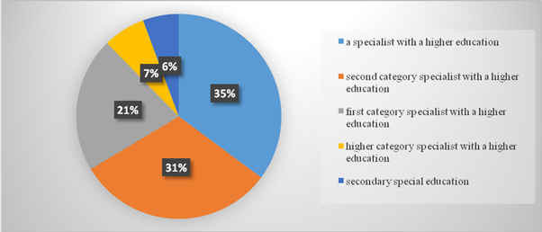
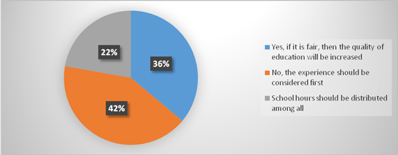
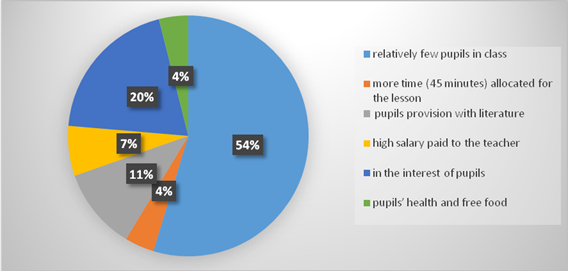

Paper Title :
Trends in the development of the place and role of teachers in financing school education
Abstract
The article analyzes the current state of financing of school education in Uzbekistan. Teachers' attitudes towards the funding process were determined through a questionnaire and the results were analyzed. According to him, the advantages and disadvantages of remuneration of labor, the relationship between the factors determining the quality of education and funding are studied. Scientific proposals and conclusions are formed on the basis of research.
Authors:
1- Dilshodjon Rakhmonov
Head department of Finance of the Banking and Finance Academy of the Republic of Uzbekistan,
Doctor of Science in Economics, professor
2- Diyora Sharafutdinova
Researcher of the Banking and Finance Academy of the Republic of Uzbekistan
Paper Transcript of Paper Titled :
Trends in the development of the place and role of teachers in financing school education
Trends in the development of the place and role of teachers in financing school education
Dilshodjon Rakhmonov
Head department of Finance of the Banking and Finance Academy of the Republic of Uzbekistan, Doctor of Science in Economics, professor
dilshodjon.rakhmonov@mail.ru
Diyora Sharafutdinova
Researcher of the Banking and Finance Academy of the Republic of Uzbekistan
diora.yunusova@mail.ru
Annotation: The article analyzes the current state of financing of school education in Uzbekistan. Teachers' attitudes towards the funding process were determined through a questionnaire and the results were analyzed. According to him, the advantages and disadvantages of remuneration of labor, the relationship between the factors determining the quality of education and funding are studied. Scientific proposals and conclusions are formed on the basis of research.
Keywords: school education, funding, remuneration, quality of education, human capital
Introduction
At the 70th Summit of the United Nations Organization in September 2015, Sustainable Development Goals were adopted. According to it, by 2030 it is going to be planned to achieve 17 goals. Based on the given global agreement, each country should take measures to achieve the recommended goals.
It should be noted that the report published by the UN also shows the importance of the issue of education. The macroeconomic situation in countries divided into four groups which is estimated by the UN. It allows to determine the reforms carried out for the economic development of countries. Accordingly, the development of the education system is important not only because it provides literacy, but also because it forms the fundamental basis for the economic stability of the country.
Reforms aimed at developing and further strengthening the basic education system in Uzbekistan require both the above documents and the current period of intensive development. In this regard, a number of works are underway. Particularly, it is safe to say that the adoption of the Decree of the President of the Republic of Uzbekistan DP-5712 “On approving the Concept of development of the public education system of the Republic of Uzbekistan until 2030” was an important step.
According to this document, a fundamental reform of the public education system is considered, which means that in perspective the development will be taken to a new level. Indeed, the financing issue was on the agenda for all periods of the reform. This concept also focuses on the following aspects of financial security as problematic issue:
- the distribution and use of funds based on an effective and transparent system is required at financing the public education system;
- the basic part of expenditures allocated from the state budget to public education institutions are spent on labor remuneration, while funds are not allocated enough for updating training facilities, materials as well as repairing school buildings.
In our opinion, the importance of ensuring transparency in financing public education is emphasized by the need for budgeting execution aimed at results. Additionally, it should be noted that the relationship between groups in the estimate of expenditures is also not stable. In particular, it is noted that the share of salary financing in the structure of executed budget expenditures is high.
The existence of these factors requires the need for the research.
Literature review
The system of remuneration of teachers is important in reforming the education system in our country. The introduction of a scientifically based approach to the formation of salaries is to be considered urgent. An important task of this category is to take into account the peculiarities of the teacher's activities and to ensure the emergence of conditions that favorably affect the quality of education.
In his dissertation prof., D. Rakhmonov notes that similar cases exist in other sectors of the social sphere. In particular, in 2007-2011, expenses for labor remuneration in the state medical system averaged 83-84 percent. In this regard, as noted, “it is necessary not to reduce wages, but to purposefully increase the volume of other expenses and optimize the relationship between wages and expenses for them”[1].
Also, Associate Professor M. Haydarov notes that “per capita financing is part of the rational use of budget funds, that is, ensuring the efficient use of funds. The other side of the problem is to ensure the quality of education so that graduates possess knowledge and skills that fully comply with educational standards [2]”.
On the given issue, Professor of Pusan University of foreign languages in South Korea, Azamat Akbarov made the following comments: “Checking and controlling the use of funds can be carried out in accordance with the present budget legislation: budget execution and implementation of its cash service, accounting procedures, etc. The introduction of a per capita financing system for schools implies that all requirements for secondary educational institutions remain valid [3]”.
Russian researchers have also studied the attitude of teachers due to financing. For example, T. Klyachko and G. Tokareva analyzed aspects of wages and their impact on education based on a questionnaire [4]. For the question whether they are satisfied with their salaries, about 70 percent of teachers expressed dissatisfaction. Because of the reduction in the workload in 2014–2016, more than 1/3 of teachers expressed their full satisfaction with that. It is noteworthy that a question was asked about how young people are interested to work as a teacher at school. 36 percentage of those who answered this question pointed out a connection between young people and a lack of risk of losing that job place. These researchers made a conclusion that even if the salaries of schoolteachers increased, they were not satisfied with the quality of education. The main reason for this is the lack of a mechanism for influencing wages by assessing the quality of education by parents.
In our opinion, even the above scientific findings illustrate that the expenditure rate per pupil does not allow limiting educational standards. Over the past period, due to the "lack of chairs" in schools, the following trends have been occurred:
- A network of non-governmental school educational institutions has been developed;
- Additional lessons after classes - the creation of tutoring services;
- A system of training centers has been formed to ensure successful participation in entrance exams to higher educational institutions;
- As well as it influenced on the organization of the educational process in schools in two shifts.
Research methodology
During the research, we tried to analyze the system of financing school education through the eyes of teachers. According to it, the questionnaire was carried out due to compiled questions designated for teachers. The survey consisted of questions hosted on (https://docs.google.com/forms/d/1DlEQeXMVADhy_DhWSv9W0ecjvDZSazPa8Ts-lOrlz6w/edit#responses). This process was carried out in April-May 2020, where teachers took part from different regions of Uzbekistan.
In this questionnaire, a special attention was paid to such aspects as the distance of the teacher to work, qualification categories, job rates, quality of education, wage setting as well as the efficiency of using the director’s fund.
Analysis and results
It should be noted that the Resolution of the Cabinet of Ministers of the Republic of Uzbekistan dated on September 30, 2019 No. 823 “On the procedure for improving material incentives for honored employees of educational institutions” was adopted. According to the Resolution, an updated version of the mechanism for paying bonuses to teachers from the director’s fund was introduced. This resolution designates the formation of a working group of at least seven people on the basis of the decision of the pedagogical council, as well as the order of the director of the educational institution to pay bonuses. It was emphasized that the structure of this working group includes representatives of the parents of pupils, who will be rotated before each academic year. Although the determination of this procedure allowed overcoming the problem presented in the aforementioned study, but the questions made in the questionnaire for the teachers helped to draw modern conclusions.
Initially, an attention was paid to the determination of qualification categories of teachers. In this regard, the answers to the questionnaire list the categories available in the school system. During our research, we will try to assess the impact on the quality of education and wages by grouping the indicated answers.

Figure 1. What is your qualification category? The content of the answers to the question, in percent
It is noteworthy that the share of teachers with the highest category, conducting their activities in school education in Uzbekistan of the total number of teachers makes 3 percent [5], which is also reflected in our survey, and more than 6.5 percent of respondents are teachers with the highest category (see Figure 1) .
The preservation of a small share of specialists of the highest category is determined by increased requirements for this category or a decrease of attraction to it.
At this stage, we will try to consider how qualification categories of teachers influence other factors. To achieve this, we take the qualification category as an unchanging factor in the context of survey responses. As variables, we will formulate scientific conclusions regarding what the total share of their answers will be.
To begin with, we will determine the influence of this factor on the rate of work of teachers. In this regard, we will place the qualification categories in the column of table 1. To the question “What job rate do you work for”, we can associate the answers to the previous question “Your qualification category” and provide information about the category and at what job rate they conduct their activities. When we use the category “job rate” in a question, we mean “staffing position”. The reason of using the word “job rate” is to prevent misunderstandings in the questionnaire.
Table 1
The relationship of staffing position to the availability of a qualification category
Qualifications of teachers(2081 persons) |
Answers to the question "What job rate do you work for?" |
||||
Full-employed |
0,75 |
0,5 |
0,25 |
Hourly |
|
Specialist with a higher education (733) |
462 |
163 |
82 |
26 |
- |
Second category specialist with a higher education (651) |
491 |
109 |
38 |
13 |
- |
First category specialist with a higher education (440) |
348 |
72 |
19 |
1 |
- |
Higher category specialist with a higher education (139) |
130 |
4 |
5 |
- |
- |
Secondary special education (118) |
49 |
46 |
19 |
4 |
|
Total |
1480 |
394 |
163 |
44 |
- |
The share of workers in one (full) staffing position made a large number, which was equal to 71 percent, and employment in 0.75 staffing position was 19 percent. Based on these figures, it should be noted that in school education, about 90 percent of teachers work full-time and about 10 percent in a staffing position. We also make the following calculation to determine how many staffing positions participate in the survey. As a result (1480 * 1.0 + 394 * 0.75 + 163 * 0.5 + 44 * 0.25), it makes 1868 staffing positions. Ultimately, during distribution of 1868 staffing positions, it was revealed that 2081 teachers carry out their activities. As well as, it can be seen the absence (of those participating in the survey) of salary recipients on an “hourly” basis in the school system (see Table 1).
Accordingly, we draw attention to the conclusion of the researcher A. Sherov [6]. He systematized the factors determining the effectiveness of fiscal policy. As a certain part of the factors determining financial efficiency in the public education system, he notes the following:
- lack of criteria for “staff turnover” of teachers;
- the ratio of the total number of teachers per staffing positions (this indicator should not exceed 1);
- a large number of long-term employees in the total number of teachers;
According to A.U. Sherov, the ratio of the total number of teachers to the number of allocated staffing positions is important in determining financial efficiency. In our research, this indicator is 1.11 (the number of teachers is 2082/1868 staffing positions). Thus, it can be noted that several teachers work in one staffing position.
Based on our analysis, in terms of table 1, it can be drawn the following conclusions:
- it should be noted that the qualification category and the staffing position are directly proportional, as the qualification category grows, the opportunities to work in a larger staffing position expand;
- the number of full-time employees is more than 70 percent;
- it should be noted that the number of staffing positions is less than the number of teachers, which is 1.11 teachers per staffing position, or an average of 0.89;
- being a specialist with a secondary special education, the probability of working on 0.5 staffing position is increased, while, the probability of working on part-time staffing position for a teacher with the highest category is reduced;
- the staffing position allocated to school education “gets behind” the number of graduates of pedagogical universities.
In our research, we try to determine and evaluate the degree of satisfaction with the work of teaching staff. To do this, we will carry out calculations based on the principle of compiling the above table.
Table 2
The effect of qualification category on the amount of salary
Qualifications of teachers |
answers to the question “Should your salary depend on the difficulty level of the subject you are teaching? |
|||
I think that it should be distributed according to work experience, and not by subject |
Of course my subject is a natural subject |
Of course, it’s hard to teach natural sciences. |
Of course, social sciences should be taught to everyone on a high level. |
|
Specialist with a higher education (733) |
509 |
80 |
29 |
115 |
Second category specialist with a higher education (651) |
446 |
75 |
51 |
79 |
First category specialist with a higher education (440) |
363 |
33 |
20 |
24 |
Higher category specialist with a higher education (139) |
103 |
16 |
11 |
9 |
Secondary special education (118) |
96 |
7 |
- |
15 |
Total – 2081 persons |
1517 |
211 |
111 |
242 |
In the expressed opinions of teachers regarding wages, a significant proportion is the principle of "due to experience." In its turn, the category of experience can be used in two different meanings: the level of the qualification category and the duration of the activity (work of experience). About ¾ of the teachers noted the importance of setting wages depending on the work of experience or qualification category. If 74 percent (103) of teachers with the highest category wanted to be appointed due to the work of experience, consequently the others may not be completely satisfied with their salaries. Considering, that the work of experience is a factor serving for the payment of bonuses, and not as a basic factor, many teachers immediately notified of the payment of bonuses included to the salary. For example, 82 percent (363) of teachers with the first category, with great experience, noted that “experience” is important. In general, the following conclusions can be drawn from the data in table 2:
- It was noted that most teachers should pay attention to the fact that experience (work experience) is the main factor in calculating wages;
- ¼ part of teachers of all categories, particularly with the highest categories, indicated that wages should be formed due to the difficulty level of the subject;
- the number of teachers who teach natural sciences, less than others in the teaching staff, emphasize that the subject they teach is not important in determining their salaries;
- in turn, teachers of social sciences, who occupy a large part compared to other teachers, said that "science is the main factor in determining wages."
The legislative documents emphasize that the basic salary of teachers in school education is determined according to the qualification category. In our opinion, the results of our research illustrate that taking into account the experience and work experience of teachers in setting bonuses to the salary can be an important factor in improving the quality of education.
In the course of our analyzes, we study the numbers for encouraging teachers, that is, paying bonuses from the director’s fund. In the following table, we consider the impact of the qualification category on the use of funds from the director’s fund. We also form a Table 3 in the order in which the previous tables were created.
In the Resolution of the Cabinet of Ministers of the Republic of Uzbekistan dated on September 30, 2019 no. 823 “On the procedure for improving material incentives for honored employees of educational institutions”, it was noted that the number of recipients of bonuses to the salary “should not exceed 50 percent of the total number of teachers, psychologists and library workers”.
While 44 percent of those who noted that the incentive system in this order was fair, the same number of teachers noted about the necessity of changing this procedure or red tape is increased. On the other hand, 54 percent of teachers withthe highest category recommended making changes to this procedure as well as they noted about excess of red tape. In general, there were those who were not informed about system of payment bonuses to the salary. Their total share was about 12 percent, and it should be noted that with the growth of the qualification category, the lack of information about this procedure tends to decrease (see Table 3).
Table 3
Teachers’ opinion to the appointment of bonuses to the salary
Qualifications of teachers |
Answers to the question “Do you like the procedure of material incentives for teachers from the director's fund?” |
|||
Yes, this procedure is fair. |
Yes, but you need to make changes |
No, the procedure for obtaining a bonus is very complicated, extra paperwork |
I do not have full information about this procedure |
|
Specialist with a higher education (733) |
302 |
88 |
198 |
145 |
Second category specialist with a higher education (651) |
268 |
97 |
216 |
70 |
First category specialist with a higher education (440) |
208 |
81 |
132 |
19 |
Higher category specialist with a higher education (139) |
56 |
34 |
42 |
7 |
Secondary special education (118) |
77 |
14 |
16 |
11 |
Total – 2081 persons |
911 |
314 |
604 |
252 |
In our opinion, it would be reasonable to further increase the transparency of the material incentive system for teachers and apply a digital-electronic procedure for appointing bonuses. Besides, red tape elements will be decreased. It is also necessary to organize, within the framework of schools, events to inform the public about this decision in the pedagogical council and about the possibility of receiving allowances through this procedure.
In his study, the Russian scientist T. Suge-Maadyr analyzed some aspects of paying salaries to teachers in public schools [7]. The qualifications of teachers will be conditionally systematized into pedagogical categories. Therefore, the category of the group should reflect the stimulation of its recipient, which will require the teacher to constantly work on himself. It emphasizes that, firstly, it should cover all categories and experience, and secondly, that the incentive ratio should be progressive - in turn, each additional academic year should be as a level function. If it is assumed that the teacher will achieve great experience and qualifications due to 10-15 years of continuous working activity, then it is assumed that the coverage of qualification experience can also be formed using 10 or 15 wage rates. Thus, the total wage rate (T) consists of two components and illustrates the following (see Formula 2.1):
(2.1)
Where Т1is the compensation rate for the restoration of labor, K is the ratio of the compensation rate for the recovering the labor force of holders of intellectual labor, T2 is a ratio indicating the level of qualification.
In our opinion, it is important to pay attention to the component of experience in the remuneration of teachers. The reason is that this component does not arise from the day of graduation and it should be noted that social ability has been accumulating over many years. Nowadays, in the practice of Uzbekistan, only the qualification category (by the Resolution of the Cabinet of Ministers of the Republic of Uzbekistan No. 275 dated on December 21, 2005) is established as a basis for wages. The introduction of this procedure will lead to the following:
- a classification of intellectual work will be provided as well as appropriate financial motivation will be created;
- a statement “who has great experience will have a large income” - allows working on the principle of a market economy;
- an increase of interest to conduct the long-term activity in the sphere– allows to encouragement of experienced teachers;
- an interest in the exchange of experience based on the practice of “teacher-student” in the system will be increased.
In conclusion, we believe that the introduction of a financial incentive mechanism for teachers based on the appropriate methodology will create conditions for improving the quality of education and increasing interest in the provision of educational services.
In our research, we also tried to pay attention to the distribution factor of class hours. At this stage, it should be noted that the distribution of school hours is of a great importance only for elementary and senior classes.

Figure 2. Should school hours be allocated according to the teacher’s qualification category? The content of the answers to the question, in percent
As the category increases at distributing school hours, the question was put in terms of reducing workload per staffing position. It was emphasized that the main part of indicated responses should be focused on the element of experience. In particular, 36 percent of teachers agree with the existing mechanism for distributing school hours (see Figure 2).
Overall, when we systematically analyzed the answers to this question from the point of view of qualification categories, it was noted that specialists with higher education and second category specialists with higher education recommended the component of “experience” in the distribution of school hours, while specialists of the first and highest categories preferred existing distribution practices. In short, while teachers pay more attention to its size in the lessons distribution, they forget that the quality of education is caused by the availability of additional time to prepare for the lesson.
In our opinion, the popularization of the skills of highly qualified teachers and the further development of the “teacher-student” system in this area will be served as an important element in improving the quality of education. In this regard, it is necessary to introduce the practice of classification in determining one staffing position of academic hours for job payroll. Therefore, it will reflect the classification of the volume of the academic load for the staff unit inversely with the qualification category.
We analyzed the aspects of achieving an improvement in the quality of education, associating wages with labor productivity and its quality. In turn, we study the relationship of factors affecting the quality of education and creating conditions for it.

Figure 3. What do you think, on what factor does the quality of education most depend on? The content of the answers to the question, in percent
Among the factors affecting the quality of education, teachers emphasize the importance of the number of pupils in the class and their interests. 55 percent of respondents said that pupil occupancy was not regarded, while 20 percent said that pupil interests were important (see Figure 3).
For example, in Germany, taking into account the interests and abilities of pupils has become a mechanism nationwide. In Germany, there is a teaching practice where pupils under 10 years old are divided into three-level classes. Particularly, 1) gymnasiums that send clever students to colleges; 2) it is envisaged that pupils (Realschule-) occupy a leadership position in the middle layers of society (white-collar workers): 3) Pupils (Hauptschule) are divided into educational groups for working in spheres involved in trade and other (blue-collar) types of activity [8].
Additionally, the researches conducted by A. Banerjee, E. Duflo, and M. Kremer prove that poverty reduction can be achieved by taking into account the interests of pupils to school education [9].
In this regard, the establishment of Presidential schools in Uzbekistan from the 2019-2020 academic year is of particular importance. However, the fact that the quota of pupils is small in these schools, which requires some changes in the country, is educational system.
Thus, in the previous chapter of our research, we also noted that the presence of the “lack of chairs in schools” factor affects financing. In this part of our research, teachers also noted that the probability of the influence of this factor on the quality of education was preserved. It is known that a large number of pupils in classes is due to the fact that the number of schools was not formed in proportion to the number of pupils as well as it plays a major role.
In our opinion, taking into account the results of international experience and research, we believe that the following should be taken into consideration in our country:
-to divide students into classes due to their interests after primary education;
- when dividing students into classes by discipline - by exact, natural and social sciences.
During analysis of factors affecting the sustainability of the quality of education, the teachers were asked the following question: “Are there all conditions for giving a lesson in the classroom?” 53 percent of respondents said that there are conditions for teaching a modern lesson, while 47 percent of teachers noted several factors. In particular, they noted about lack of money at school, a laboratory is necessary and there are problems with connecting to the Internet.
Analyzing the intersection of answers to the last two questions above, we will try to form a scientific conclusion which allows to improve the quality of education.
Table 4
Teachers’ opinion to the appointment of bonuses to the salary
Grouping of quality factors of education by teachers |
Answers to the question “Are there all conditions for giving a lesson in the classroom?” |
|||
Yes, there all conditions to conduct a modern lesson |
My subject needs a lab, but there is no any |
At school, there is no money for material resources, and it is impossible to raise money from parents |
Only a whiteboard is enough to teach social sciences, but it’s easier to get information if you are connected to the Internet. |
|
relatively few pupils in class |
575 |
67 |
225 |
273 |
more time (45 minutes) allocated for the lesson (82) |
43 |
- |
11 |
28 |
pupils provision with literature(226) |
153 |
6 |
21 |
46 |
high salary paid to the teacher (140) |
59 |
11 |
36 |
34 |
subject in the interest of pupils (411) |
224 |
20 |
45 |
122 |
student health and providing free food (82) |
43 |
6 |
14 |
19 |
Total– 2081 persons |
1097 |
110 |
352 |
522 |
Because of our research, it should be noted that 50 percent of teachers who indicated that all conditions for teaching were created in the classroom, suggested that there were fewer pupils in the class. 55 percent of teachers who consider pupils’ interest are important, agree with classroom conditions. One of the interesting cases at the intersection of answers was that 67percent of those who assessed the provision of literature as unsatisfactory indicated that there all conditions for giving a lesson in the classroom (see Table 4).
The following conclusions can be drawn from the data in table 4:
- along with the necessary changes in ensuring the quality of education - The fact that the Internet problem is the most basic, as well as it is supported by all; respondents;
- The second important factor is taking into account the interests of pupils, while the factor of pupil’s occupancy is of a primary importance;
- Allocated to the lesson - more than 45 minutes is important for the social sciences;
- Salaries paid to the teachers, as well as pupils’ health are not the main factors in ensuring the quality of education.
Conclusion
Consequently, our researches have shown that financing the school education should consider the factors that have a primary influence on the quality of education, as well as the most important factors are the classification of system of teachers' remuneration.
Literature
- Rakhmonov D.A. Improving the financing of health care institutions in the Republic of Uzbekistan :. ... abstract for PhD degree. – Т.: BFA, 2012. – p.25
- Haydarov M.T. Determining the basic norms of expenditures per pupil of secondary schools // Journal of Economics and Finance. –Т.: - 2016. - №3. –p.49-58.
- Akbarov A. Can the method of allocating funds per capita in the education system save the sphere?https://daryo.uz/k/2019/01/03/ta%CA%BClim-tizimida-kishi-boshiga-pul-ajratish-usuli-sohani-qutqara-oladimi/
- Klyachko T, L., Tokareva G.S. Teachers' salaries: expectations and results achieved//Issues on Education. – М.: 2017. –№4, - 199-216p. https://vo.hse.ru/data/2017/12/20/1159981508/Klyachko.pdf
- Source: Data of the Ministry of Finance of the Republic of Uzbekistan
- Sherov A.U. Analysis of factors determining the effectiveness of fiscal policy //“Iqtisodiyot va innovatsion texnologiyalar” ilmiy elektron jurnali. № 3, may-iyun, 2019 yil
- Suge-Maadyr T.A. Methodological aspects of remuneration of teachers of public schools: foreign experience and its use in the Russian Federation: abstract ... Ph.D.– М.: МосПГУ, 1995. – p.19
- The German School System https://www.german-way.com/history-and-culture/education/the-german-school-system/
- Research to help the world’s poor. https://www.nobelprize.org/uploads/2019/10/popular-economicsciencesprize2019-2.pdf